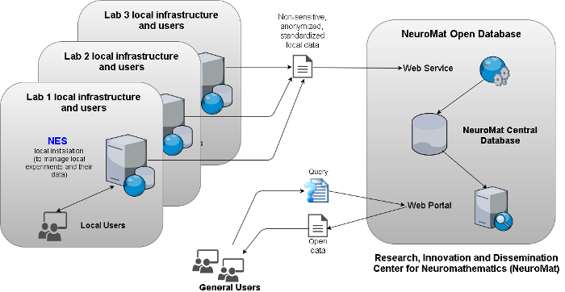

NES: a free software to manage data from neuroscience experiments
Aug 31, 2017
Neuroscientists perform complex experiments aiming to reach a more effective understanding about the functioning of the brain and the treatment of its pathologies. Each research laboratory uses different techniques and methodologies to produce and to analyze its findings. These experiments generate large volumes of data in diverse formats. Furthermore, with the increasing of the scale of research projects, many research laboratories are confronted with new technical (e.g. data size, quality control, analysis complexity, guaranteed reproducibility) and social (e.g. employee turnover, data sharing requirements) challenges. In addition, there is a lack of computational tools to document the experiments, to facilitate the electronic data capture, and to support reproducibility.
In this scenario, the Research, Innovation and Dissemination Center for Neuromathematics (NeuroMat) has developed the Neuroscience Experiments System (NES), a free software to manage data from neuroscience experiments. NES is a web-based system that provides an environment to record data and metadata from each step of a neuroscience experiment in a secure and user friendly platform. It was developed to assist researchers in their data collecting routine throughout a neuroscience experiment, integrating data records from different types such as clinical, electrophysiological, and behavioral. Furthermore, it provides a unified repository (database) for the experimental data of an entire research laboratory, group, or project.
NES has been the object of several pieces of the NeuroMat newsletter, including the methodology that the development team has relied on to work on the software, the release of ongoing versions to receive feedbacks from users and potential users, the media impact of the release of this tool, and the flow of functionalities that were produced in the run.
Types of data manageable with NES
NES was developed to keep together experimental data and its fundamental provenance information, defined by the seven W's (Who, What, Where, Why, When, Which, (W) how) [1]. Examples of provenance information maintained by NES are: information about the scientists responsible for the experiment and collection of data and the description of the subject groups (who); the details about the recording protocol or behavioral data collection (e.g. the types of data collection performed) (what); the details of the experimental protocol used in the collection of primary data (how); the start/end date time for data collection (when); the purpose of the experiment (why); the information about the experimental conditions to which the groups of subjects are submitted, such as tasks to perform and stimulus to apply (which); the information about the laboratory where data was collected (where) and even publications or other results that have arisen from the study of the collected data. Scientists can also record additional details for each experiment’s volunteer, such as the information about his/her clinical history and sociodemographic data.
In NES, each primary data acquired from an experiment is always associated to a study participant and to a specific step of the experimental protocol. For this reason, before storing the primary data collected in an experiment, the researcher needs to record in detail each step involved in the experimental protocol (e.g., the specific preparation for the realization of the experiment). The experimental protocol is described as a workflow, that can contain both sequential and parallel steps. With this, NES provides a structured and comprehensive platform with a robust tracking of data provenance that is fundamental to enable the reproduction of the experiment.
It is worth mentioning that NES is not a new proposal to standardize the experimental data representation. There are several models and formats (e.g. NeoHDF5, NWB, NIX) currently in development to address this issue. These models are appropriate for organizing and exchanging data of a particular type and from a particular experiment. However, they do not replace the function of a database.
A database system keeps large data volumes and provides functionalities for access control, data consistency, fault tolerance and efficient data recovery. Furthermore, on a database it is possible to store the relationships among different types of data from different experiments, allowing for more sophisticate data analysis which are specially valuable to support advances in the healthcare domain.
The data model used in NES is aligned with several formats used in neuroscience, enabling interoperability with the most promising initiatives for standardization of data representation for electrophysiology, as much as with guidelines to report neuroscience experiments (e.g., MINI [2]; MINEMO [3]; fMRI [4]). Currently, NES is able to manage several types of electrophysiological data and metadata used by the neuroscience community.
NES's functionalities
The main functionalities of NES can be grouped in the following:
- Participant registration: consider participants' personal data, social-demographic data, social history, and medical evaluations.
- Experiment management: experiment registration and configuration. The experiments may involve several types of components (e.g., tasks, stimuli, instructions, electroencephalogram (EEG), electromyogram (EMG), transcranial magnetic stimulation (TMS), questionnaire administration, and other types of data collection). Configuration includes the equipment settings and other general characterizations of the experiment.
- Management of questionnaire administration: integration with LimeSurvey to manage the administration of electronic questionnaires used to collect data in experiments.
More details about the newest functionalities are provided in the sequence.
Electrophysiology
NES allows to register data from EEG, EMG and TMS experiments. For each experiment, it manages data and metadata from the experimental protocol until the data acquisition. NES is able to deal with electrophysiological data collected in several formats used by the neuroscience community. In NES, each data collected in a registered experiment is always associated with the subject from which it was collected and with a specific stage of the experimental protocol.
The data can be raw data obtained from signal acquisition equipments (e.g., EEG and EMG) or other additional files related to the different types of stages that an experimental protocol can has (e.g., multimedia files for stimuli presentation, and spreadsheets with behavioral data). Furthermore, the information about the equipment and the configuration used in a data acquisition can be registered at NES. This information is fundamental to enable the sharing and reuse of the raw data. To the best of our knowledge, there is not another software tool available for public usage that provides similar functionalities to manage electrophysiological data from experiments.
Data exportation
NES allows to export all data and metadata of the experiments which it stores. The exportation includes the data from the experiment subjects (e.g., questionnaire responses, clinical diagnoses, electrophysiological raw data) and metadata about the experimental protocol (e.g., description of the purpose of the experiment, description of the protocol steps, equipment configuration and notes made by scientists). Also, the export menu allows filtering by participant information as gender, diagnosis and age. Textual and numeric data are organized in standard plain-text format files (CSV, comma separated values), while the EEG raw data can be exported in the Neuroscience Without Border (NWB) format, that is one of the most promising initiatives for standardization of data representation for electrophysiology.
Integration with the Goalkeeper game
The Goalkeeper Game was created by the NeuroMat research team as part of the development of the statistical tools required by the new class of stochastic processes that this team works on. The scalable architecture of NES allows for straightforward extension to manage data from other novel types of neuroscience experimental protocols, such as the ones which use Goalkeeper game. The current version of NES allows an experimenter to associate a context tree configuration with a specific step of an experimental protocol. In addition, it allows to store data collected from an experiment's subject by means of the Goalkeeper game application.
Groups of subjects (and their respective experimental protocols) can be registered for each experiment. To each subject, NES enables to attach data files in several formats. These files can contain, for example, data with the performance of the subject in a round of the Goolkeeper game, or can be additional files related with each phase of the game.
The NeuroMat Open Database
The NeuroMat Open Database is an initiative of NeuroMat to provide an open-access platform for sharing and searching data and metadata from neuroscience experiments. The platform is constituted by a web portal and web service. The web portal is being designed to be a user-friendly interface for the neuroscience community to the NeuroMat open-access database. The web service is used to feed the open database with experimental data generated by the NeuroMat’s researchers.
Through NES, a researcher is be able to send the data and metadata of his/her experiments to the NeuroMat Open Database web service. The data is anonymized before being sent from NES to the Open Database; no sensitive data leaves NES or is stored in the Open Database. When a new dataset of an experiment arrives at the Open Database, it will be evaluated by a curatorial committee. The committee will analyze if the dataset is appropriate for publication on the NeuroMat Open Database. The researcher will be notified of the status of his/her data submission. After approval, the dataset will be made publicly available on the NeuroMat Open Database web portal. Figure 1 illustrates the process.

Related works
Most of the open-source software tools to neuroscience focus on two main groups: the storing and sharing of electrophysiological data and those that allow the management of the experimental protocol. Some of them that are in the first group provide interfaces to manipulate electrophysiological data objects, as data array, events, regions of interest, etc. or extensively annotate these specific data objects. The ones that are in the second group provide the management of the experimental protocol, accurate presentation of stimuli and mechanisms for collection of participant responses.
Most software tools that are in the first group were designed to enable data exchange based on file. They provide a repository to store and share data and metadata from neuroscience researches. It makes neuroscience data publicly available so it can be widely used for research, teaching and learning purposes. Even though it is a good initiative to facilitate collaborative research between experimental neuroscientists, their process to contribute data is not trivial. The researcher have to fill a list of requirements to submit a request to contribute data. After approval, the data and metadata to be shared must to be in a specific format, e.g. the NWB format.
Some of them can synchronize data with the its web based portal, e.g. EEGBase. Through its portal researchers have the means for storage, management, search and sharing of data. The data and metadata are implemented according to a defined ontology and are registered using predefined html forms, however the metadata are registered in textual mode and its definition depends of the user.
The software tools that allow management the experimental protocol, accurate presentation of stimuli and collection of participant responses provide an open-source software library that allows a very range of visual and auditory stimuli and a great variety of experimental designs to be generated within a framework based on Python, e.g. Psychopy and Expyriment. Others, as OpenSesame, provide a graphical and scripting interface to create wide range of experiments including psychophysical experiments, speeded response time task, eye-tracking studies, and questionnaires. In spite of provide a good graphical interface, some tasks need to be performed using Python scripting.
The software packages described above are focused in a specific type of scenario and fail to describe various types of experimental protocols. For example, some are focused in cellular and intracellular, others like EEGBase is focused in EEG and event related potential (ERP). Despite they provide a specific data model to store data and metadata, these models are very extensible making its posterior query to track the provenance information related to the experiment more difficult. Oftentimes, this information is written in non understandable form, hindering its interpretation by other experimenters by which experiments cannot be later reproduced or verified. The software’s packages that are part of the second group require technical knowledge to write scripts in python and perform the description of the design of experimental protocol and its later execution. Neuroscience labs need tools that assist the experimenter in the management of all steps of the neuroscience experiment, while being able to provide a widest range of experimental designs as possible to reduce the variety of software that an experimenter needs to learn to use.
Uses of NES
To the best of our knowledge, there are not software tools, open-source, which provide facilities to record data and metadata involved in all steps of an electrophysiological experiment. NES has emerged as a way to help to make up this deficit and provide a friendly mechanism to register experimental data and its fundamental provenance information.
NES's web interface and modular format provide an intuitive use of its data management functionalities. Its use does not depend on any specific knowledge on informatics. NES was developed using open technologies and tools which can be easily installed and used in any research laboratory. It is licensed under the Mozilla Public License version 2.0 and its source code and documentation are available at github.com/neuromat/nes.
NES is being used at the Laboratory of Neuroscience and Rehabilitation (LNR) of the Institute of Neurology Deolindo Couto (INDC) of the Federal University of Rio de Janeiro (UFRJ), especially in the context of the ABRAÇO network, and at the AMPARO network, a research center at the University of São Paulo that has as main objective to promote the improvement in the quality of life of people living with Parkinson's disease and their relatives.
References
[1] Goble, C. Position statement: Musings on provenance, workflow and (semantic web) annotations for bioinformatics.Workshop on Data Derivation and Provenance, Chicago. Vol. 3. (2002) [2] Gibson, F. et al. Minimum information about a neuroscience investigation (MINI): electrophysiology.Nat. Precedings. (2008) [3] Frishkoff, G. et al. “Minimal Information for Neural Electromagnetic Ontologies (MINEMO): A Standards-Compliant Method for Analysis and Integration of Event-Related Potentials (ERP) Data.” Standards in Genomic Sciences 5.2 (2011) [4] Poldrack, R. et al. Guidelines for reporting an fMRI study.Neuroimage. 40.2, 409--414 (2008)
This piece is part of NeuroMat's Newsletter #43. Read more here
Share on Twitter Share on Facebook| NeuroCineMat |
|---|
|
Featuring this week: |
| Newsletter |
|---|
|
Stay informed on our latest news! |
| Follow Us on Facebook |
|---|
| Podcast A Matemática do Cérebro |
|---|

|
| NeuroMat Brachial Plexus Injury Initiative |
|---|

|
| Neuroscience Experiments System |
|---|

|
| NeuroMat Parkinson Network |
|---|

|
| NeuroMat's scientific-dissemination blog |
|---|
|
|